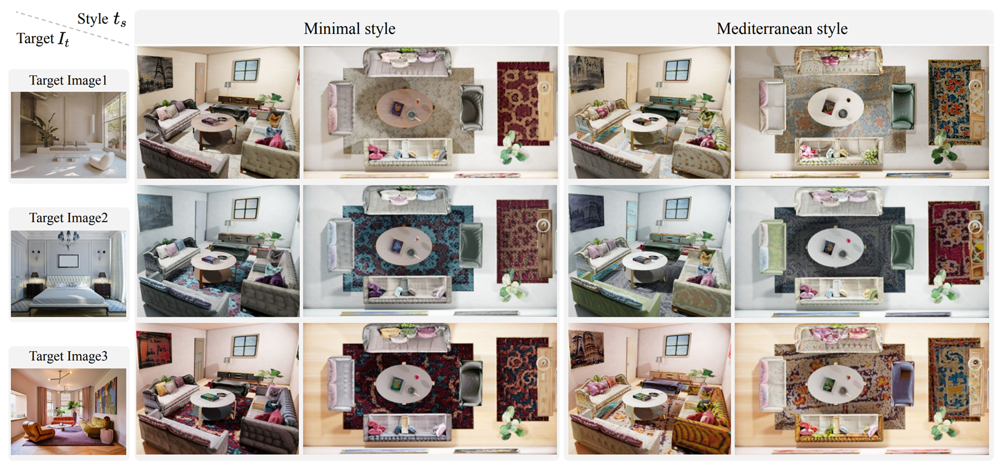

Text2Scene: Text-driven Indoor Scene Stylization with Part-aware Details CVPR 2023 (Highlight)
- Inwoo Hwang
- Hyeonwoo Kim
- Young Min Kim Seoul National University
Abstract
We propose Text2Scene, a method to automatically create realistic textures for virtual scenes composed of multiple objects. Guided by a reference image and text descriptions, our pipeline adds detailed texture on labeled 3D geometries in the room such that the generated colors respect the hierarchical structure or semantic parts that are often composed of similar materials. Instead of applying flat stylization on the entire scene at a single step, we obtain weak semantic cues from geometric segmentation, which are further clarified by assigning initial colors to segmented parts. Then we add texture details for individual objects such that their projections on image space exhibit feature embedding aligned with the embedding of the input. The decomposition makes the entire pipeline tractable to a moderate amount of computation resources and memory. As our framework utilizes the existing resources of image and text embedding, it does not require dedicated datasets with high-quality textures designed by skillful artists. To the best of our knowledge, it is the first practical and scalable approach that can create detailed and realistic textures of the desired style that maintain structural context for scenes with multiple objects.
Video
Object Stylization
Text2Scene generates distinctive textures for different parts, for example, lamp shades, cushions on the sofa, handles of frying pans, of plant pots. The part-aware texture and strong semantic embedding enhance the realism for varioius categories of 3D objects.
Scene Stylization

Text2Scene is scalable and can create detailed and realistic textures for various indoor scenes. Further, diverse results can be obtained from the same 3D scene and controlled by input conditions.
Citation
The website template was borrowed from Michaël Gharbi and Ref-NeRF.